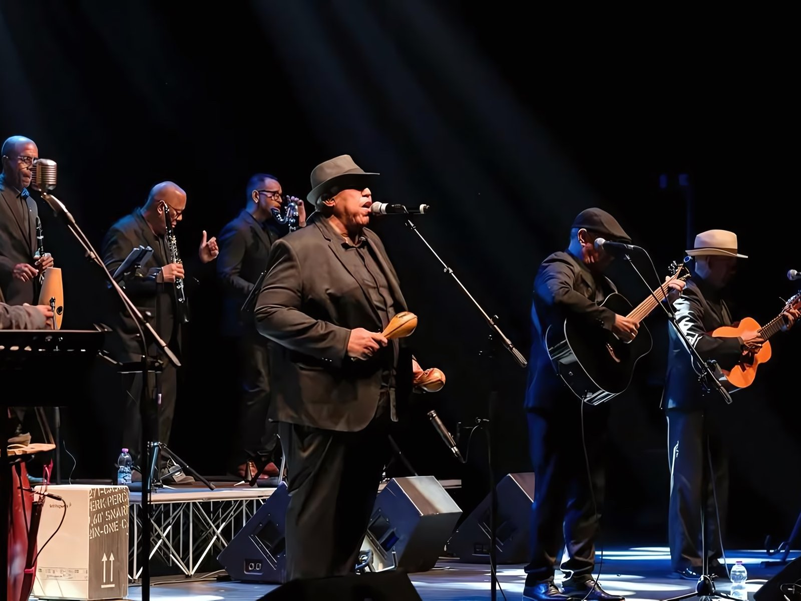
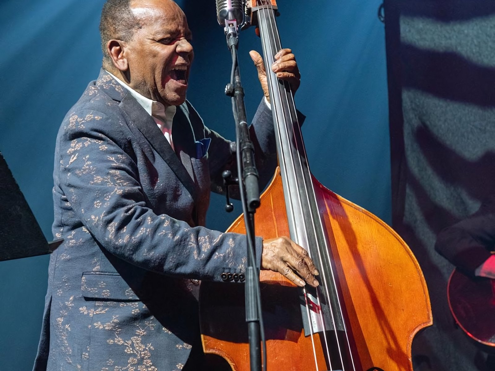

L'autentico son cubano del Buena Vista Social Club torna in Italia nell'estate 2026 con il “Vívelo International Tour” del Grupo Compay Segundo, una tournée estiva di 14 date che porta sui palchi italiani l'eredità musicale del leggendario artista, oggi guidato dal figlio Salvador Repilado Labrada.
Per la tappa al Forte di Bard ho curato la logistica dell'evento, il coordinamento on site e la gestione delle richieste del rider hospitality: catering, ristorante, backstage, camerini e assistenza durante l'evento.
Key Activities
- Logistica dell'evento e coordinamento on site
- Gestione delle richieste del rider hospitality
- Coordinamento di catering e ristorante
- Allestimento di backstage e camerini
- Assistenza durante l'evento
SOLD OUT EVENT
Galleria

